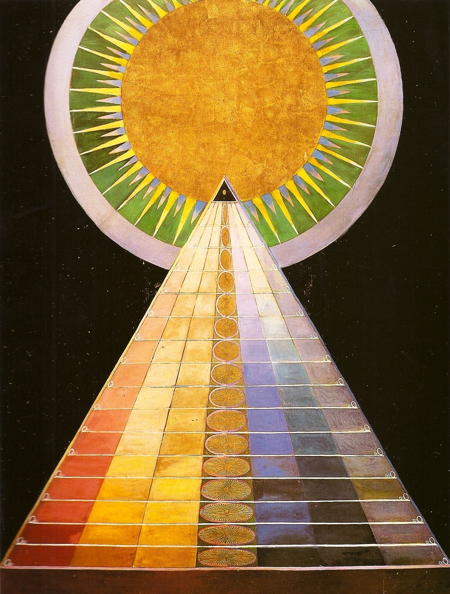

here is my second page
PRESS SHIFT TO CHANGE COLOR
class= "movingHilma"

If I could go back and change the history of the internet I may suggest a version where in order to even use a computer that is hooked up to a net you must first create an account that is linked to your unique identity. Therefore you can only have one account and it is public record who is posting what. This would indeed change what made an anonymous software like ‘Request for Comment’ so influential, there by changing the entire way the internet is used today. It may be able to place more accountability on individuals and create a more safe environment for all. Places of anonymous conversation could still exist on specific forums but most forms of communication would be made to follow these rules.
The change would not be run by the government but by the creation of a public database that could be governmentally funded but not exclusive to officials. Funding for this project could come from community governmental services if the case was made to them that it would be beneficial to national security. It would likely be difficult to obtain since you aren’t getting funding for building a state of the art rocketlauncher-tank hybrid but it could have been do-able.
To me the great man theory is stupid because I feel as though even if great men changed the world the men/women are completely a product of the community and environment they come from. If a seemingly small technological change such as identity verification could have changed the entire history of the internet, theres no way just a series of great men decided current civiliation.

I would first set out a research team to establish a set of a few dozen local businesses which meet a few criteria: 1. Already have a strong local customer base, 2. Are located in areas spread around the country in order to ensure equal connection, and 3. Have the infrastructure to support a large influx of people and possess a router. We would then establish routers in each local business and train a few citizens on the proper management of the routers. We could hire a few people from the neighboring country to educate a few citizens on installation and management as well. This would likely have to take the form of a governmentally owned business which would hire and train workers. The business would make money by charging a small flat rate for everyone (like with universal health care) and in turn ensure that everyone who applied for service would get it (like MotherBoard did).
The internet service would be separate from the southern country’s service but would not be banned. Citizens would possess the ability to connect to the neighboring websites but would initially go through the local networks. This would be mutually beneficial so would not be expensive as the neighboring country could advertise to our citizens.
To me the success of art can be summed up in a quote from Leon Ferrari: “Art is not beauty or novelty, art is effectiveness and disruption.” To me these early artists were able to live in a digital world that was not impacted by this modern online need to be beautifully designed and easily navigable. Of course I am not trying to romanticize this time period but a parallel can be drawn between the disappearance and/or aesthetitizing of all those silly personal web pages we saw in the video. I am sure they still exist but how can you even find them?
A piece in the reading I really liked was the King’s Cross Phone-In by Heath Bunting. One of the most profound aspects of the internet as an art medium was it’s new ability to connect lots of people quickly, effectively collapsing time and space. Bunting’s piece used that idea to create hundreds of tiny interactions, interactions that would never have happened otherwise. This is disturance and effectiveness.
One of my favorite forms of internet art are video essays. OliSUNvia creates video essays aimed at taking critical looks primarily at gen-z culture. Using technology and the internet she is able to inlay her essays with graphics and videos that keep the viewer’s attention and help explain her points. Making education accessible like this is our first step towards seeing the world more clearly.
I would use systems of self exploration described in the readings in order to achieve my goal. Students would be given a website and its code and be instructed to explore it. They would also be given a program about how the code works and have access to a teacher to explain things to them. Differing from ‘No More Teacher’s Dirty Looks’ there would be somewhat of a learning goal and set amounts of time each day to explore and learn. I do believe that memorization of processes and certain details is important to understanding complex ideas. Students would be tested however by needing to make their own website that includes certain basic details one of which is an example or look into an aspect of web creation that they found interesting. I think that testing knowledge is still important to learning but engaging in curiosity is arguably more important.
I also wanted to comment on an aspect of one of the videos. My sister one time said that a phone is like a second brain. When watching the video of the Mother of All Demos I found it interesting the things he was showing that he could do on the program like sorting a grocery list or finding your way home. I thought why would someone want to use a computer to remember all these things, aren’t there better ways to use a computer. But then I realized that they lived in a time where these things, things mandatory for existence, had to live either on physical paper or in the mind. What the computer seems to have done for people of the time, and for me even though I don’t even realize it often, is free up more space in the brain. I don’t have to know streets and locations (even though I probably should) because I always have a little GPS in my pocket. I can spend my time thinking about more or maybe even less productive things.
My strategy would be to create a series of informational presentations that creative computing students at the university can sign up for. I would put most of the budget money into the hiring of guest speakers. These speakers would ideally be big names in the software development industry. The name of the lectures would be something like ‘Building Sucess as a Software Developer’-- something vague and intriguing that would attract talented students who want to make a name for themselves. I would then talk with the guest speaker, paying them handsomely to instill ideas of software privatization into the contents with out actually using direct privitization terminology. Potentially the speaker could quote Bill Gate’s open letter saying “One thing you do do is prevent good software from being written. Who can afford to do professional work for nothing? What hobbyist can put 3-man years into programming, finding all bugs, documenting his product and distribute for free?”. This might get the students mad at the idea of free distribution of software. Finally, we would hand out flyers at the end of the meetings advertising a software distribution program that basically sells and circulates student made software, cutting the student a fraction of the actual earnings.
Obviously in this scenario I would want to help out. Althought seeing the ways Aaron Swartz was treated by the government after doing something much less illegal, I would have to try my best for it not the be traced back to me. I would not be able to handle the psychological torture Swartz was put through during his case. In order to help them I would put as much information onto a burner laptop as possible and hand it off to them. Anonymity would be the name of the game. I am much more of a coward honestly than someone like Aaron and would not risk more than that. Merely though, that amount of information could be enough to get developing countries working on their own version of the vaccine. Ideally there would be multiple distributors of it around the world. It is much less a question of lowering the price of the single distributor and more of making multiple node for the vaccine to be produced from. Because, even though this should not be a money making endeavor, it ultimately would be and maybe if more areas around the world were making money off of it they could afford more research for different vaccines and medical advancements.
In this situation I would likely try and anonymously leak the information to a newspaper reporter. I would not give my name or identity but instead give him other verifying information so that the reporter knows I am legit. I would do this in order to avoid being reprimanded as a whistleblower (it seems like whistleblower and traitor have been viewed as synonymous to large establishments recently sometimes getting people blacklisted from certain job types completely). It seems to me that this would be the best course of action not only because I would likely get in trouble if I reported it to HR (since I was not suppose to see the documents) but it seems as if public pressure is one of the best ways to get a cooperation to actually do something. This would be very blatant discrimination and the public loves to have someone to root against so not only would this be safe but it would also be effective.
Also I wanted to add something about the piece ‘HYPER-REALITY’ by Keiichi Matsuda. I really loved that piece and think it is such a great experiment showing the way our brains can be so easily influenced and distracted by the things around us especially things that are all trying to get our attention. There was a part in the video where the tech powered down for a second and you could hear and see the true sounds and colors of the world around the character. This reminded me eerily of when I take my earbuds out when I am on the metro. It is a feeling that is so startling exactly because of how still everything becomes. It really got me thinking about how much my attention is influenced by the media I surround myself with. I really liked that piece so thanks for including it.
Turning down the offer would not change the structure of creation and recuporation by corporations and mass media. If I didn’t have to do anything like the Kendall Jenner x Pepsi x Black Lives Matter campaign I would take the offer. Being an e celebrity hopefully wouldn’t change much about my life except allowing me to follow my passions more. This deal would also help me follow my passions more so I would take it. The terms of my agreement with Pepsi would be a short term contract so I wouldn’t be tied to them forever. If it was enough money I would try and not do any more brand deals. Instead I would try to subtly push information about commercial propaganda. I don’t think I really could do much towards abolishing something like this while also being an influencer- I would be part of the problem in my opinion. I would more focus on what I do now which is try and identify and resist hyper consumerism around me and try and discuss it with my friends. I can make much more meaningful change by attempting to change my friend’s regular hangout spot from McDonald’s to a park. It seems small but money is time and time is freedom.
The use of network technology is beneficial for anything that requires a large scale and quick dissimination of information. This is used very effectively with national and worldwide news but something we are missing in our everyday lives is local news. We see alot of protests and propeganda for world wide issues and I am not saying that is bad, but in my opinion one of the reasons its hard to really make change is because we are focusing on too big of a scale. If we were to focus on and, evidently learn about, new problems in our local communities more frequently we could find that we, or someone we know, has the power to actually effect the issue.
Ultimately, what determines tech and creative exploration is whether or not it benefits people who have the means to support it. I’ve recently been reading a book about how AI is being used in 50 different companies and a great number of companies use it for things that increase user comfort and accessibility to their product instead of using it to ‘help people’ so to speak. Google, for one, has been a huge player in deep learning tech development and the products they have rolled out are things like a camera lens that can search the thing in the picture online and give you options to purchase it. This is not always bad as the goals of a coorperation can line up with what is good for humanity (opportunities in new energy creation sectors and a need for clean energy have lined up well) but it can very, very often lead to bias rates of topics selection for scientific studies. A better way could hypothetically be having a government run sector for bio and tech research (we could take it from the military fund, also I am addressing this question from the point of view of someone from the United States) that is voted on by a group of experts. I think the US used to have a group of experts that would consult with senators about issues but the funds were recently pulled.
Advertising definitely works on me. It can sometimes be helpful because I am offered up things that align perfectly to my taste but I also need to consistently ask myself the question of would I have gone looking for this item if it was not suggested to me. My ideas and tastes come from the ways I spend my time, principally with my friends and family, secondly on social media, and finally from the art and books I consume. I do read a lot and make an effort to experience lots of art but even spending half an hour a day on instagram adds up fast. I am an artist and I find that when I was spending lots of time on social media the meaning of my art was often shallow and almost performative. I would discuss topics that I didn’t think for myself about. It is still sometimes this way because I am far from free of social media, but in spending more time thinking for myself and reading more complex things my art has taken more considerate and niche tones.
I do not necessarily consider myself to be ‘free’. Knowing this I try to be aware of the way my brain is influenced. I consistently ask myself why I want something and consistently tell myself no because honestly we all could just eat beans and rice for dinner and wear the same t-shirt every day.
I found the army video kind of hilarious because I dated a guy who would have been so susceptible to it. He would watch these terribly gorey and sad war movies and want to be the guy with the gun. Advertisement is perfect because it plays on our dreams. I can’t imagine a world where there is no advertising; it works so perfectly into all of our weaknesses.
- number one
- number two